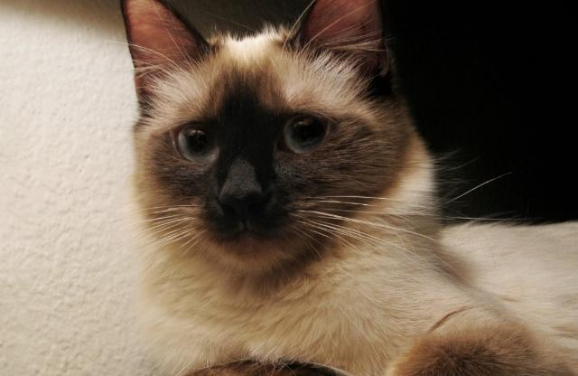
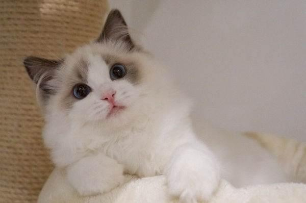
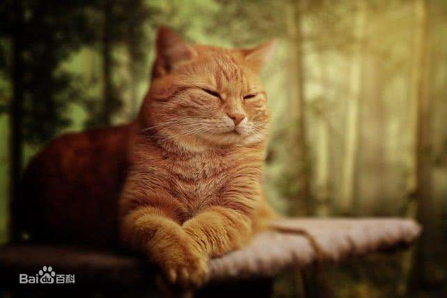
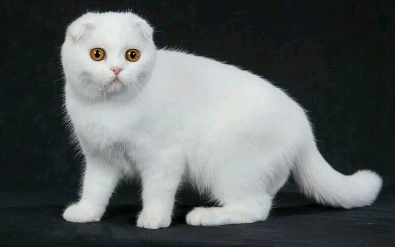
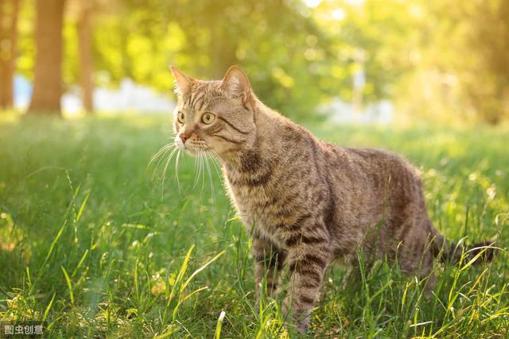
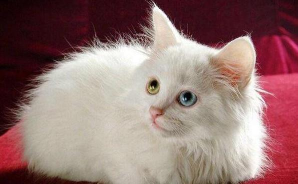

-

暹罗猫
暹（xiān）罗猫是世界著名的短毛猫，也是短毛猫的代表品种。种族原产于暹罗（今泰国），故名暹罗猫。在200多年前，这种珍贵的猫仅在泰国的皇宫和大寺院中饲养，是足不出户的贵族。暹罗猫能够较好适应主人当地的气候，且性格刚烈好动，机智灵活，好奇心特强，善解人意。
了解更多 -

布偶猫
布偶猫是猫中较大、较重的一种。它的头呈V形，眼大而圆，被毛丰厚，四肢粗大，尾长，身体柔软，多为三色或双色猫。 布偶猫抱起来像软绵绵的布偶，而且对人非常友善。它性格大胆，不知道什么叫恐惧，而且对疼痛的忍耐性相当强，常被误认为缺乏疼痛感，因此很能容忍孩子的玩弄，是非常理想的家庭宠物。
-

橘猫
橘猫（orange cats）是家猫常见的一种毛色，也叫橘子猫、桔猫，普遍存在于混种猫和不具独特规定毛色的注册纯种猫种，与品种无关，与被毛基因有关。国内大部分橘猫都是狸花猫，因此也称为橘狸、黄狸。橘猫是家猫常见的一种猫，普遍存在于混种猫和不具独特规定毛色的注册纯种猫种，与任何品种无关，只与被毛遗传基因有关。
-

苏格兰折耳猫
苏格兰折耳猫(学名：Felis silvestris catus，英文名：Scottish Fold)是猫的一种在耳朵有基因突变的猫种。由于这猫种最初在苏格兰发现，所以以它的发现地和身体特征而命名。这种猫在软骨部份有一个折，使耳朵向前屈折，并指向头的前方。也正因如此，这种猫患有先天骨科疾病，时常用坐立的姿势来缓解痛苦。它乐意与人为伴，并用它特有的这种安宁的方式来表达。
-

狸花猫
狸花猫在中国大地上的历史已经有千年了，而他们也是中国人在农耕年代最好的伙伴，他们吃的不多，可是对于老鼠却绝对不会放过，即使是现在也是中国人最喜欢的抓老鼠工具。现在他们也和狗一样走进了我们的生活开始成为宠物，并且他们比其他种类的宠物也丝毫不差。
-

山东狮子猫
橘猫（orange cats）是家猫常见的一种毛色，也叫橘子猫、桔猫，普遍存在于混种猫和不具独特规定毛色的注册纯种猫种，与品种无关，与被毛基因有关。国内大部分橘猫都是狸花猫，因此也称为橘狸、黄狸。橘猫是家猫常见的一种猫，普遍存在于混种猫和不具独特规定毛色的注册纯种猫种，与任何品种无关，只与被毛遗传基因有关。